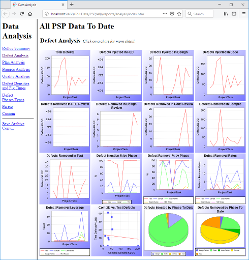

Data Charts and Reports Data Charts and Reports
Data Charts and Reports Data Charts and ReportsThe Process Dashboard automates many reports and charts that can be quite useful in a project postmortem.
The main report that contains the most useful postmortem information for your project will probably be the Project Plan Summary form. The Project Plan Summary can generally be produced by navigating to the project for which you would like the report, clicking the script button, and selecting the option for the Project Summary form.

It is important to mark your project as complete. This lets the dashboard know that you are finished with the project, and it can use the project data to calculate the various items in the reports and charts. You can edit the project completion date via the appropriate field on the Project Plan Summary. If you haven't edited the project completion date field on the Project Plan Summary, marking all the phases in the project complete will mark the project complete as well.

HTML versions of the Time Log and the Defect Log are also available from the scripts button. If you navigate to the main Process script for any of the PSP processes (usually by following a link marked "top" near the bottom of the various reports and forms), you will links named "Time Log" and "Defect Log" in the text of the script. These will bring up a read-only version of the two logs.
The dashboard also makes many graphical charts of various kinds available.
If you have any PSP components in your personal work hierarchy, the
 menu
will display a "PSP Data Analysis" option. Choosing this option will display
a split view with an index of various chart types on the left and thumbnails
of the charts available on the right.
menu
will display a "PSP Data Analysis" option. Choosing this option will display
a split view with an index of various chart types on the left and thumbnails
of the charts available on the right.

Clicking any of the thumbnail charts will bring up a full-sized version of the chart. When viewing a full-sized chart, resizing your browser window will cause the chart to resize as well. Finally, clicking on a full-sized chart will display a table of the data used to draw that chart.
The dashboard provides charts that allow
If you need a special chart or report that the Process Dashboard does not provide, you can create your own reports using Java servlets or JSPs. For more information, see the Custom JSP Reporting help topic.